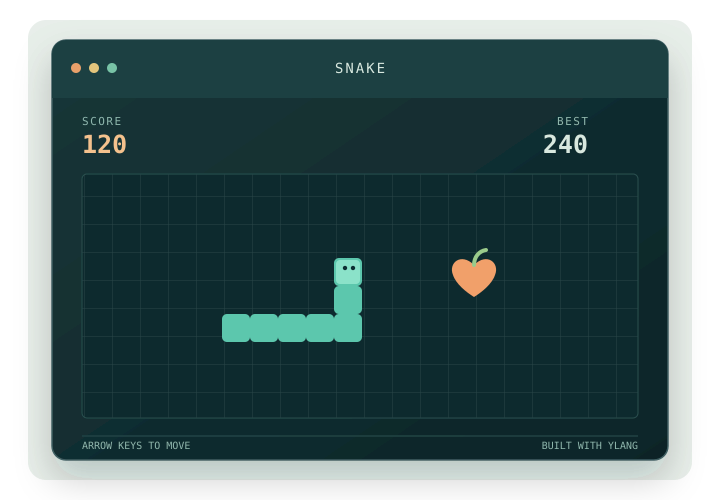

AN OPEN-SOURCE LANGUAGE
Make something
real with YLang.
A compiled programming language with readable syntax and explicit types. Made to learn from, build with, and improve in the open.
YLang 2.0 Open source Built in the open
A project made with YLang

Start small. Make something playable.
Readable syntaxCode that stays clear.
Explicit typesFewer hidden surprises.
Open compilerExplore how it works.
BUILT WITH YLANG
A little game.
A real program.
Snake is a simple example of turning YLang code into something you can play. It brings together game logic, input, drawing, and a replay button in one small project.
Explore the Snake exampleYOUR NEXT PROJECT STARTS HERE